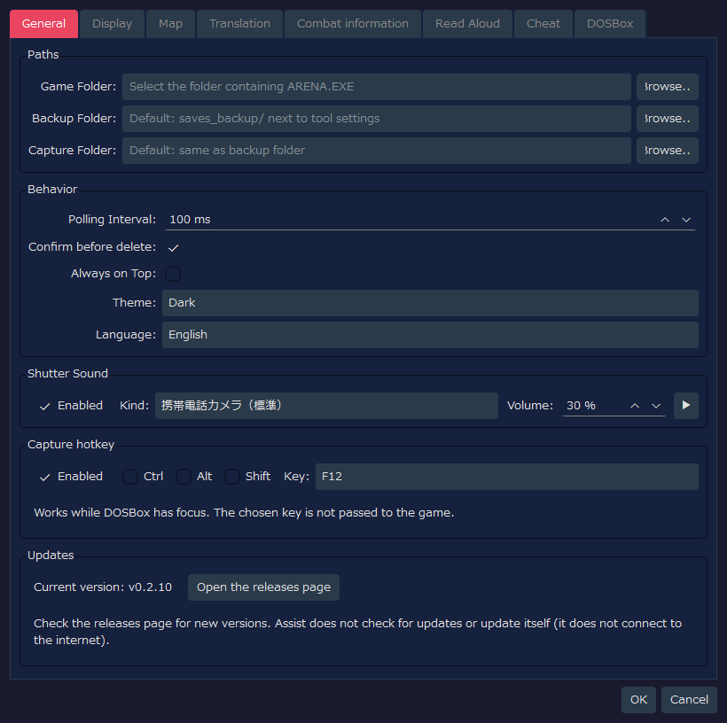
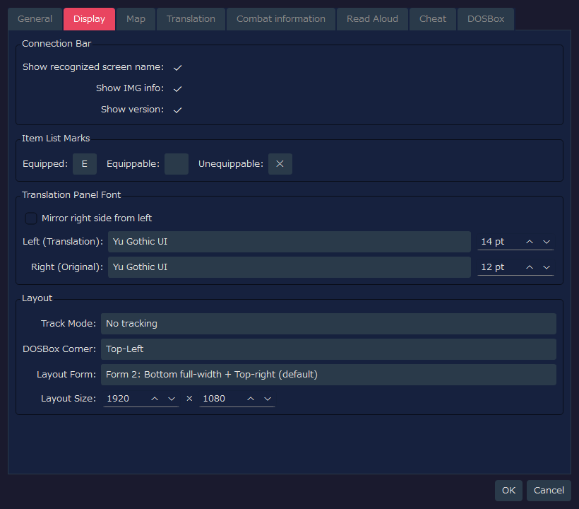
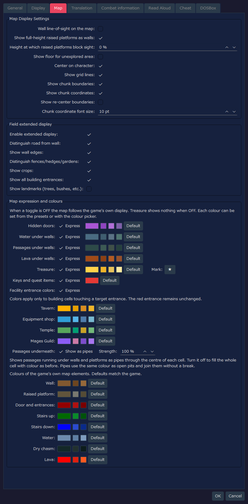
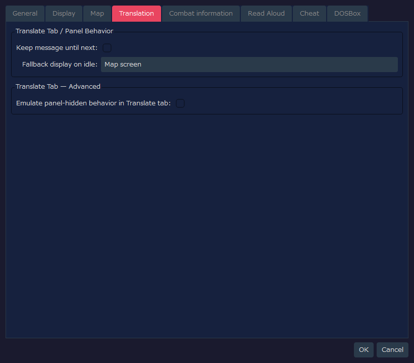
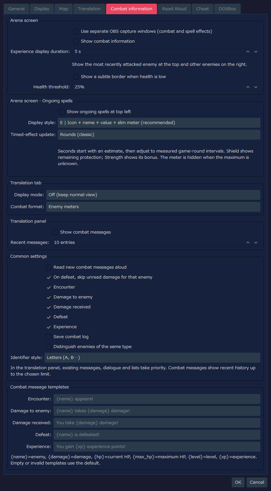
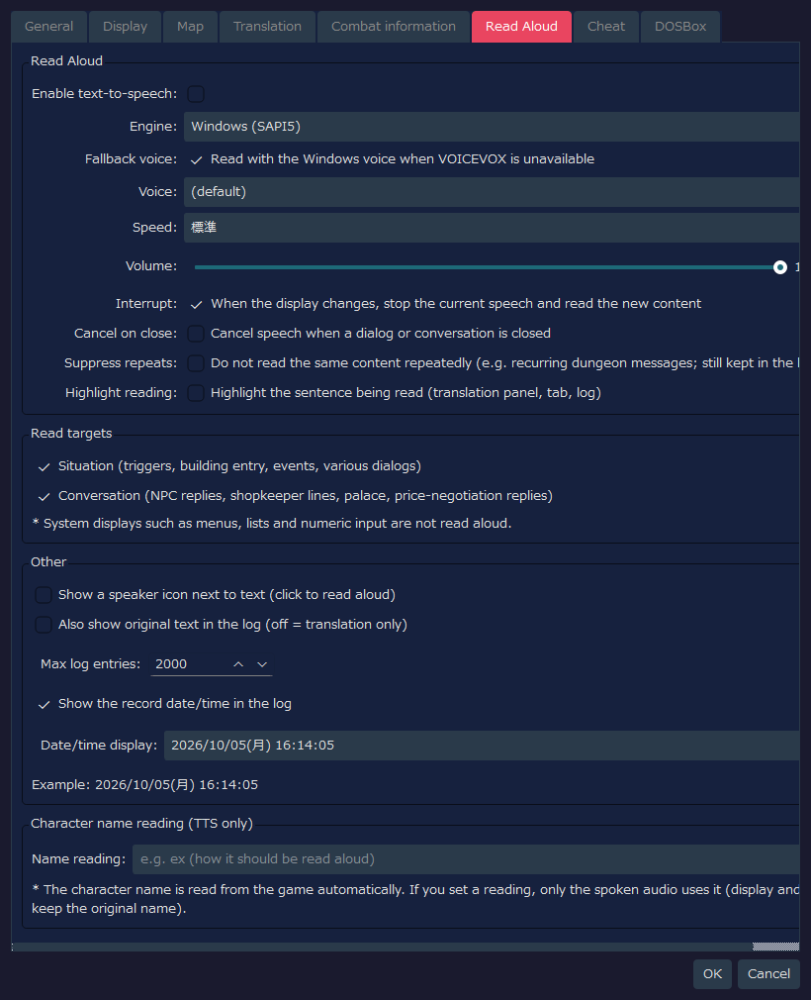
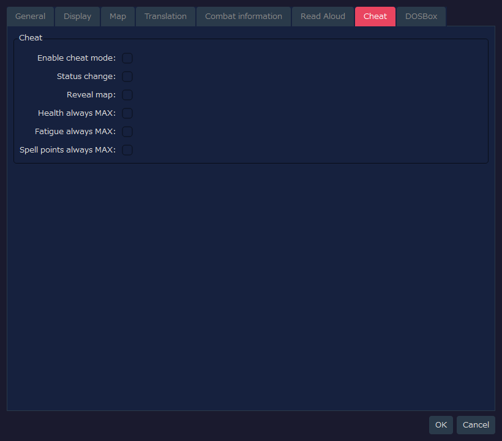
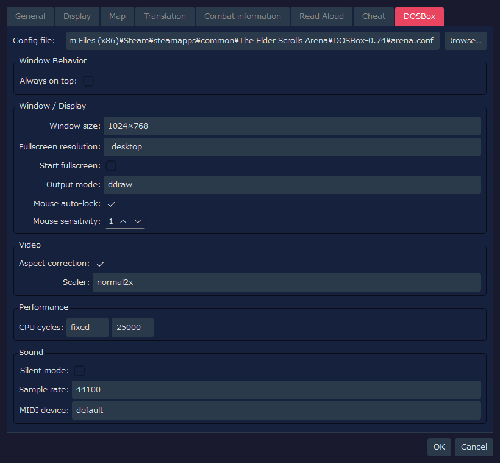

RTESArenaAssist — Settings Dialog Detailed Guide
This page shows a capture of each tab of RTESArenaAssist's Settings dialog, with an explanation of each UI element.
The images were taken of the Settings dialog with the default settings in your display language and the default "Dark" theme.
The values in the DOSBox tab reflect not only Assist's own settings file but also what was read from arena.conf at the default path. If the arena.conf in your environment is different, the values shown will differ too.
Contents
General tab
This tab sets the paths, the basic behavior, the shutter sound and the capture shortcut key, and lets you check your version.

Paths
| Label | Default | Description |
|---|
Game Folder: | Empty | The folder that contains Arena's ARENA.EXE and the save files. While it is not set, save management and reading game data are unavailable |
Backup Folder: | Empty | Where save backups are stored. When empty, saves_backup/ next to the tool's settings file is used |
Capture Folder: | Empty | Where screenshots are saved. When empty, the same folder as the backup folder is used |
Browse... | - | Selects each folder |
Behavior
| Label | Default | Description |
|---|
Polling Interval: | 100 ms | How often the DOSBox screen and memory state are checked. The default is short so that short messages are easier to catch |
Confirm before delete: | ON | Shows a confirmation dialog when deleting captures or backups |
Always on Top: | OFF | Shows Assist's main window in front of other windows |
Theme: | Dark | Chooses the color theme of the UI |
Language: | Auto (system) | The UI language. When empty, it is detected automatically from the system language, and a change takes effect after the app is restarted |
Shutter Sound
| Label | Default | Description |
|---|
Enabled | ON | Plays a sound effect when a screenshot is saved |
Kind: | 携帯電話カメラ（標準） (mobile phone camera, standard) | The shutter sound to play. You can choose from standard, short version, double, treble-boosted and mild |
Volume: | 30 % | The playback volume of the shutter sound |
▶ | - | Previews the selected shutter sound |
Capture hotkey
You can save a capture just by pressing a key while the game screen (DOSBox) keeps the focus. Use it to capture messages that disappear after a few seconds.
| Item | Default | Description |
|---|
Enabled | ON | Uses the shortcut key for capturing |
Ctrl / Alt / Shift | OFF | Turn ON to combine modifier keys |
Key: | F12 | The key to use. You can choose from F5 to F12, PrintScreen, Pause, ScrollLock, Insert, Home, End, PageUp and PageDown |
- The key you press is not passed to the game. Keys that the game or DOSBox uses (F1 / F3 / F4 / F8, Ctrl+F5 to F12, Alt+F12, Alt+Pause) cannot be chosen
- If another app uses the same key as a shortcut, that app's shortcut does not work while this app is running. Choosing a different key lets both work
- If the key could not be registered, a message is shown in the status bar. Even then, you can still capture with the camera button on the toolbar
Updates
| Label | Default | Description |
|---|
Current version: | - | The version of Assist you are using |
Open the releases page | - | Opens Assist's releases page (the list of Releases) in your browser. Check here to find out whether a newer version exists |
Assist does not connect to the internet, so it does not check for updates or update itself.
Display tab
This tab sets the connection bar, the equipment marks in item lists, the translation panel font and the layout.

Connection Bar
| Label | Default | Description |
|---|
Show recognized screen name: | ON | Shows the name of the currently recognized screen in the connection bar |
Show IMG info: | ON | Shows the IMG information being detected in the connection bar |
Show version: | ON | Shows the app version in the connection bar and the status bar |
Item List Marks
| Label | Default | Description |
|---|
Equipped: | E | A one-character mark shown at the left end of equipped items |
Equippable: | Empty | The mark for equippable items. The default is empty, so nothing is shown |
Unequippable: | ✕ | A one-character mark shown at the left end of items that cannot be equipped |
Translation Panel Font
| Label | Default | Description |
|---|
Mirror right side from left | OFF | When ON, the font and size of the original text side are made the same as the translation side |
Left (Translation): | App default / 14 pt | The font and size used for the translated text. If no font name has been saved, the app's default font for your environment is chosen |
Right (Original): | App default / 12 pt | The font and size used for the original English text. Because mirroring is OFF, it can be set separately from the translation side |
Layout
| Label | Default | Description |
|---|
Track Mode: | No tracking | Chooses whether, when either DOSBox or Assist is moved, the other follows it |
DOSBox Corner: | Top-Left | The reference corner of the screen where DOSBox is placed by one-shot arrangement and by layout mode |
Layout Form: | Form 2: Bottom full-width + Top-right (default) | How the area is divided between DOSBox and the Assist panels. Form 2 is the standard layout that uses the top right and the full-width bottom |
Layout Size: | 1920 x 1080 | The size of the whole canvas in layout mode |
Map tab
This tab sets the exploration map and the field extended display.

Map Display Settings
| Label | Default | Description |
|---|
Wall line-of-sight on the map: | OFF | When OFF, unexplored areas behind walls are not recorded on the map. When ON, it is closer to the original Arena, and areas seen through walls are recorded too |
Show full-height raised platforms as walls: | ON | Shows raised platforms that fill the space from floor to ceiling in the wall color. Only how things are classified for display changes; how sight is blocked is not affected. Raised platforms that are not full height are still shown as raised platforms |
Height at which raised platforms block sight: | 0 % | With the ceiling height as 100%, raised platforms whose top reaches this height or more block sight on the map. At 0%, every raised platform blocks sight |
Show floor for unexplored area: | OFF | When OFF, only explored cells show the floor color, which hides the shape of the unexplored area. When ON, the whole map is shown in the parchment color |
Center on character: | ON | Makes the map follow the character automatically when the character moves. While the character is stopped, you can pan manually |
Show grid lines: | ON | Shows grid lines at cell boundaries |
Show chunk boundaries: | ON | Highlights the chunk boundaries (units of 64 tiles) on the field map |
Show chunk coordinates: | ON | Shows the coordinates of each chunk on the field map, to help you grasp your position |
Show re-center boundaries: | OFF | Shows the re-center boundaries of the field map as dashed lines. A supplementary display for investigating or checking positions |
Chunk coordinate font size: | 10 pt | The text size of the chunk coordinate labels |
Field extended display
| Label | Default | Description |
|---|
Enable extended display: | ON | The master switch for the field map extended display. When OFF, the display is close to the in-game automap |
Distinguish road from wall: | ON | Draws roads you can walk on and impassable parts such as buildings and walls in different colors |
Show wall edges: | ON | Shows the outlines of walls and edge terrain |
Distinguish fences/hedges/gardens: | ON | Tells edge terrain such as fences, hedges and gardens apart by connecting lines |
Show crops: | ON | Shows crops such as corn and fields with a dedicated color or mark |
Show all building entrances: | ON | Also shows the entrances of houses, taverns, temples, city gates and so on in red. Crypt, tower and dungeon entrances are shown in red regardless of this setting |
Show landmarks (trees, bushes, etc.): | OFF | Overlays simple marks for trees, bushes, rocks, graves, ruins and so on. They are numerous and make the map hard to read, so the default is OFF |
Map expression and colours
The game's map draws things such as passages under walls without telling them apart. Here you set whether to draw them distinguished, and the color of each element. If you turn "Express" OFF on a row, that element returns to the same display as the game's map (turning Treasure OFF shows nothing).
| Label | Default | Description |
|---|
Hidden doors: | ON | Shows discovered hidden doors in a dedicated color. Until discovered, they remain walls |
Water under walls: | ON | Shows waterways running under walls in a dedicated color. They are not shown until you actually pass through there and reveal them |
Passages under walls: | ON | Shows passages running under walls. They are not shown until you actually pass through there and reveal them |
Lava under walls: | ON | Shows lava running under walls in a dedicated color. It is not shown until you actually pass through there and reveal it |
Treasure: | ON | Overlays a mark where you obtained treasure. You can change the mark's character in the field on the right. While "Reveal map" in the Cheat tab is ON, every place with treasure is shown, whether or not you obtained it |
Keys and quest items: | ON | Among treasure, shows the marks of keys and quest items in a different color. When OFF, they are shown in the same color as treasure. They are not shown when Treasure is OFF |
Facility entrance colors: | ON | On city maps, replaces the building-colored cells touching the entrance of a tavern, equipment shop, temple or Mages Guild with a color for each facility. The color of the red entrance does not change. The color of each facility can be changed in the fields below |
Passages underneath: | Show as pipes / Strength 100 % | Shows passages running under walls and raised platforms as pipes through the center of the cell. When OFF, the whole cell is filled with color as before. The pipe color is the same as that of pits, and it joins the pits without a break. Lowering Strength makes the pipes more subtle |
Click the color swatch to the right of each item to choose any color. The small buttons next to it are suggested colors that are easy to choose, and Default is the button that returns it to the original color. You can change the colors of the game's own elements in the same way: walls, raised platforms, doors and entrances, stairs (up and down), water, dry chasms and lava (the defaults are the same colors as the game).
Translation tab
This tab sets the supplementary display of the translation panel and the Translate tab.

Translate Tab / Panel Behavior
| Label | Default | Description |
|---|
Keep message until next: | OFF | Specifies whether trigger and object-interaction messages stay in the translation panel until the next message arrives |
Fallback display on idle: | Map screen | Chooses what to show across the whole Translate tab while exploring when there is no translated text. By default, the map screen takes priority |
Translate Tab — Advanced
| Label | Default | Description |
|---|
Emulate panel-hidden behavior in Translate tab: | OFF | When ON, translation results and dialog messages are shown in the Translate tab, just as when the translation panel is hidden. An advanced setting for verification |
You set where combat and ongoing spells are displayed, separately. The new display, reading aloud and saving features are OFF by default. Setting values saved by earlier development versions are carried over as they are. The displayed text is available in Japanese, English, Spanish, German, French, Italian and Russian.

Arena screen
| Item | Default | Description |
|---|
Use separate OBS capture windows (combat and spell effects) | OFF | Gathers combat information and ongoing spells into one window that you can select with OBS's window capture |
Show combat information | OFF | Shows the enemy you most recently exchanged blows with, who has been encountered and is currently in sight, at the top of the screen, and the other encountered living enemies on the right, even out of sight. You can check health, fatigue, spell points, and the damage dealt and defeats. Damage you take is shown at the bottom edge of the exploration area |
Experience display duration: | 5 s | Shows experience at the bottom right at the moment you gain it, and removes each frame after the specified number of seconds. When you gain more in succession, the older frames are moved to the left (1 to 60 seconds) |
Show a subtle border when health is low | OFF | When health falls to the specified percentage or below, makes the edge of the exploration screen flash faintly. It can be enabled even if you do not use the enemy display of combat information |
Health threshold: | 25% | The percentage at which the low-health border starts to show (1 to 99% of maximum health) |
The damage-received display disappears automatically about 5 seconds after it occurs. The same rule is used for enemy sight in any place. When the map or the coordinates are not determined, enemies are not shown by guesswork.
To record with OBS, turn this setting ON, then choose RTESArenaAssist オーバーレイ (the window title is shown in Japanese in every language) in "Window Capture", allow transparency and overlay it above the game video. Combat information and ongoing spells appear in the same source.
Arena screen · Ongoing spells
| Item | Default | Description |
|---|
Show ongoing spells at top left | OFF | Shows the state of Light, Shield, Strength, Fire Resistance and Levitate |
Display style: | E | Icon + name + value + slim meter (recommended) | Choose from A "Name + remaining value", B "Name + horizontal meter", C "Icon + horizontal meter", D "Icon + clockwise shade", E "Icon + name + value + slim meter" and F "Compact chip" |
Timed-effect update: | Rounds (classic) | Chooses whether Light, Fire Resistance and Levitate are updated in rounds or in estimated seconds, once per second. Seconds are corrected from the in-game progress interval, so they are not necessarily a fixed multiple when the speed of progress changes, for example with DETAIL |
Shield shows the remaining protection, and Strength shows the amount of increase. When the maximum value cannot be confirmed, as when you connect partway through, the meter may be left out. The seconds display is an estimate, and when an effect ends follows the state in the game.
Combat information on the Translation tab
| Item | Default | Description |
|---|
Display mode: | Off (keep normal view) | Choose from keeping the normal view, using the normal view together with combat information, and showing combat information full screen |
Combat format: | Enemy meters | When combat information is shown, chooses text or the enemy meter display |
Combat information on the Translation panel
| Item | Default | Description |
|---|
Show combat messages | OFF | Shows combat text in the translation panel. When an existing message, conversation or list appears, that takes priority |
Recent messages: | 10 entries | Shows the most recent 1 to 50 combat lines. When the number is exceeded, the oldest lines are removed and new ones added |
Common settings and messages
| Item | Default | Description |
|---|
Read new combat messages aloud | OFF | When reading aloud is enabled overall, reads new combat lines in the order they occur. It does not exclude identical recent lines, and the next damage does not cut off the previous reading |
On defeat, skip unread damage for that enemy | ON | On a defeat, cuts off the damage dealt to and received from that enemy that is being played and the unread part. Reading for other enemies continues |
Save combat log | OFF | Saves the combat history separately from the normal log. Only when there are records is a switch shown in the Log tab |
Distinguish enemies of the same type | OFF | Only when there are several enemies with the same name, adds a distinguishing symbol after the name |
Identifier style: | Letters (A, B…) | Choose A, B… or 1, 2… |
Combat message templates | The default text for each language | Edits the text for Encounter, Damage to enemy, Damage received, Defeat and Experience. Empty fields and placeholders that cannot be used revert to the default text |
Read Aloud tab
This tab sets reading aloud of translated text, the read targets, the log display and the reading of the character name.

Read Aloud
| Label | Default | Description |
|---|
Enable text-to-speech: | OFF | Enables the whole feature of reading translated text aloud |
Engine: | Windows (SAPI5) | Chooses the reading engine. VOICEVOX can be chosen when a local VOICEVOX engine is running |
Fallback voice: | ON | When VOICEVOX is chosen but unavailable, reads the sentences that could not be read with the Windows voice. When OFF, they are not read |
Voice: | (default) | Shown when the engine is Windows (SAPI5). The SAPI voice to use. With (default), the OS's default voice is used |
Character: | The character of style ID 0 | Shown when the engine is VOICEVOX. The VOICEVOX character used for reading |
Style: | Style ID 0 | Shown when the engine is VOICEVOX. The voice style of the chosen character |
🔊 Test | - | Shown when the engine is VOICEVOX. Reads a short sentence as a trial with the chosen character and style |
Speed: | 標準 (standard) | The reading speed |
Volume: | 100 | The reading volume. Set it in the range 0 to 100 |
Interrupt: | ON | When the display switches, stops the previous reading and reads the new content. It also stops when you return from an NPC reply to the menu |
Cancel on close: | OFF | Stops the reading in progress when a dialog or conversation is closed |
Suppress repeats: | OFF | Does not read the same content repeatedly (such as recurring dungeon messages). It stays in the log |
Highlight reading: | OFF | Colors the sentence being read (translation panel, Translate tab, log) |
When VOICEVOX cannot be found, "Start VOICEVOX to select it (127.0.0.1:50021)." is shown. After you start VOICEVOX and reopen the Settings dialog, you can choose the character and the style.
Read targets
| Label | Default | Description |
|---|
Situation (triggers, building entry, events, various dialogs) | ON | Makes text that explains the situation, such as triggers, building entry, events and various dialogs, a read target |
Conversation (NPC replies, shopkeeper lines, palace, price-negotiation replies) | ON | Makes conversation text, such as NPC replies, shopkeeper lines, the palace and price-negotiation replies, a read target |
System displays such as menus, lists and numeric input are not read aloud.
Other / Log
| Label | Default | Description |
|---|
Show a speaker icon next to text (click to read aloud) | OFF | Shows a speaker icon next to displayed text, for reading aloud by clicking |
Also show original text in the log (off = translation only) | OFF | Shows the original English text alongside the translation in the translation log. When OFF, only the translation is shown |
Max log entries: | 2000 | The upper limit on the number of log entries saved. Older logs beyond it are deleted automatically |
Show the record date/time in the log | ON | Shows the record date and time on log entries |
Date/time display: | yyyy/MM/dd(aaa) HH:mm:ss | The display format of the log date and time. You can choose a preset or a custom format |
Character name reading
| Label | Default | Description |
|---|
Name reading: | Empty | Replaces the character name obtained automatically from the game with the reading you specify, only when reading aloud. The original name remains in the display and the log |
Cheat tab
This tab sets helper features such as rewriting in-game values and always-MAX functions.

| Label | Default | Description |
|---|
Enable cheat mode: | OFF | The master switch for the cheat features as a whole. Even if only this is turned ON, nothing changes unless you turn ON the sub-settings |
Status change: | OFF | Allows status changes such as editing attributes |
Reveal map: | OFF | While cheats are enabled, shows the whole map |
Health always MAX: | OFF | While cheats are enabled, returns current health to the maximum if it is lower |
Fatigue always MAX: | OFF | While cheats are enabled, returns current fatigue to the maximum |
Spell points always MAX: | OFF | While cheats are enabled, returns current spell points to the maximum |
DOSBox tab
This tab reads DOSBox's arena.conf and sets the window display, video, performance and sound.

Config file / Window Behavior
| Label | Default | Description |
|---|
Config file | arena.conf at the default path | DOSBox's configuration file. When Assist's own setting is empty, the standard Arena Steam version location is read as the default path |
Browse... | - | Selects any arena.conf |
Always on top: | OFF | Shows the DOSBox window in front of other windows |
Window / Display
| Label | Default | Description |
|---|
Window size: | 1024×768 | windowresolution. Choose from the presets; when custom is chosen, edit the W/H number fields |
Fullscreen resolution: | desktop | fullresolution. Specifies the resolution used in fullscreen |
Start fullscreen: | OFF | fullscreen. Specifies whether DOSBox starts in fullscreen |
Output mode: | ddraw | output. DOSBox's rendering output method |
Mouse auto-lock: | ON | autolock. Automatically locks the mouse inside the DOSBox screen |
Mouse sensitivity: | 100 | sensitivity. The mouse sensitivity inside DOSBox |
Video
| Label | Default | Description |
|---|
Aspect correction: | ON | aspect. Corrects the aspect ratio of the video |
Scaler: | normal2x | scaler. DOSBox's screen enlargement filter |
| Label | Default | Description |
|---|
CPU cycles: | fixed 25000 | cycles. Specifies the CPU emulation speed. With fixed, the number field on the right becomes active |
Sound
| Label | Default | Description |
|---|
Silent mode: | OFF | nosound. Disables DOSBox's sound |
Sample rate: | 44100 | rate. The mixer's sampling rate |
MIDI device: | default | mididevice. The device used for MIDI playback |